library(semla)
library(tibble)
library(dplyr)
if (!requireNamespace('TabulaMurisSenisData', quietly = TRUE)) {
BiocManager::install("TabulaMurisSenisData")
}
library(TabulaMurisSenisData)
library(SingleCellExperiment)
library(Seurat)
library(purrr)
library(patchwork)
library(ggplot2)Cell type mapping with NNLS
Cell type mapping with SRT data refers to a set of methods which allows you to infer the quantity of cells from SRT expression profiles. semla offers a quick method based on Non-Negative Least Squares to infer cell type proportions directly from Visium spot expression profiles. We utilize the NNLS method implemented in the RcppML v0.3.7 package available on CRAN: https://cran.r-project.org/web/packages/RcppML/index.html. Please ensure you have the correct version installed before proceeding with this tutorial.
In this tutorial, we’ll take a look at two examples. First, we have two tissue sections of a mouse brain and a single cell RNA-seq dataset from the Allen Brain Atlas. In the second example, we have a mouse kidney section and single cell RNA-seq data from the Tabula Muris Senis.
Mouse brain
For this tutorial, we will use a single-cell data set from the Allen Brain Atlas. You can check the code chunk below or follow this link to download it manually.
Code
options(timeout=200)
tmpdir <- "." # Set current wd or change to tmpdir()
dir.create(paste0(tmpdir, "/mousebrain"))
targetdir <- paste0(tmpdir, "/mousebrain")
dir.create(paste0(targetdir, "/single-cell"))
destfile <- paste0(targetdir, "/single-cell/allen_brain.rds")
download.file("https://www.dropbox.com/s/cuowvm4vrf65pvq/allen_cortex.rds?dl=1", destfile = destfile)We will also need to download the 10x Visium data from 10x Genomics website. You can download the files directly with R by following the code chunk below or download the data directly from here.
Code
dir.create(paste0(targetdir, "/visium"))
# Download section 1
dir.create(paste0(targetdir, "/visium/S1"))
download.file(url = "https://cf.10xgenomics.com/samples/spatial-exp/1.0.0/V1_Mouse_Brain_Sagittal_Anterior/V1_Mouse_Brain_Sagittal_Anterior_filtered_feature_bc_matrix.h5",
destfile = paste0(targetdir, "/visium/S1/filtered_feature_bc_matrix.h5"))
download.file(url = "https://cf.10xgenomics.com/samples/spatial-exp/1.0.0/V1_Mouse_Brain_Sagittal_Anterior/V1_Mouse_Brain_Sagittal_Anterior_spatial.tar.gz",
destfile = paste0(targetdir, "/visium/S1/spatial.tar.gz"))
untar(tarfile = paste0(targetdir, "/visium/S1/spatial.tar.gz"),
exdir = paste0(targetdir, "/visium/S1/"))
file.remove(paste0(targetdir, "/visium/S1/spatial.tar.gz"))
# Download section 2
dir.create(paste0(targetdir, "/visium/S2"))
download.file(url = "https://cf.10xgenomics.com/samples/spatial-exp/1.0.0/V1_Mouse_Brain_Sagittal_Posterior/V1_Mouse_Brain_Sagittal_Posterior_filtered_feature_bc_matrix.h5",
destfile = paste0(targetdir, "/visium/S2/filtered_feature_bc_matrix.h5"))
download.file(url = "https://cf.10xgenomics.com/samples/spatial-exp/1.0.0/V1_Mouse_Brain_Sagittal_Posterior/V1_Mouse_Brain_Sagittal_Posterior_spatial.tar.gz",
destfile = paste0(targetdir, "/visium/S2/spatial.tar.gz"))
untar(tarfile = paste0(targetdir, "/visium/S2/spatial.tar.gz"),
exdir = paste0(targetdir, "/visium/S2/"))
file.remove(paste0(targetdir, "/visium/S2/spatial.tar.gz"))Load Visium data with semla into a Seurat object. The following steps assumes that the mouse brain 10x Visium data is located in ./mousebrain/visium/.
# Assemble spaceranger output files
samples <- Sys.glob("./mousebrain/visium/*/filtered_feature_bc_matrix.h5")
imgs <- Sys.glob("./mousebrain/visium/*/spatial/tissue_hires_image.png")
spotfiles <- Sys.glob("./mousebrain/visium/*/spatial/tissue_positions_list.csv")
json <- Sys.glob("./mousebrain/visium/*/spatial/scalefactors_json.json")
infoTable <- tibble(samples, imgs, spotfiles, json,
section_id = paste0("section_", 1:2))
# Create Seurat object with 1 Sagittal Anterior section and 1 Sagittal Posterior section
se_brain_spatial <- ReadVisiumData(infoTable)Load single-cell data
se_allen <- readRDS("./mousebrain/single-cell/allen_brain.rds")Normalize data
Here we will apply the same log-normalization procedure to both the 10x Visium data (se_brain_spatial) and to the single-cell data (se_brain_singlecell). We set the number of variable features quite high because later on we will use the intersect between the variable features in the single-cell data and the variable features in the 10x Visium data for NNLS. The NNLS method is quite fast so there is actually no need to select only a subset of features. Instead, we can just use all genes that are shared across the single-cell and 10x Visium data.
# Normalize data and find variable features for Visium data
se_brain_spatial <- se_brain_spatial |>
NormalizeData() |>
FindVariableFeatures(nfeatures = 10000)
# Normalize data and run vanilla analysis to create UMAP embedding
se_allen <- se_allen |>
NormalizeData() |>
FindVariableFeatures() |>
ScaleData() |>
RunPCA() |>
RunUMAP(reduction = "pca", dims = 1:30)
# Rerun FindVariableFeatures to increase the number before cell type deconvolution
se_allen <- se_allen |>
FindVariableFeatures(nfeatures = 10000)We can visualize the available cell types in our UMAP embedding of the cells. We have access to 23 annotated cell types, including L2-L6 layer neurons which have a distinct spatial distribution in the tissue.
DimPlot(se_allen, group.by = "subclass")
Run NNLS
The RunNNLS() method requires a normalized Seurat object with 10x Visium data and a a normalized Seurat object with single-cell data. The groups argument defines where the cell type labels should be taken from in the single-cell Seurat object. In our single-cell Seurat object, the labels are stored in the “subclass” column.
DefaultAssay(se_brain_spatial) <- "Spatial"
ti <- Sys.time()
se_brain_spatial <- RunNNLS(object = se_brain_spatial,
singlecell_object = se_allen,
groups = "subclass")── Predicting cell type proportions ──ℹ Fetching data from Seurat objects→ Filtering out features that are only present in one data set→ Kept 3378 features for deconvolutionLoading required namespace: RcppMLℹ Preparing data for NNLS→ Downsampling scRNA-seq data to include a maximum of 50 cells per cell type→ Cell type(s) CR have too few cells (<10) and will be excluded→ Kept 22 cell types after filtering→ Calculating cell type expression profilesℹ Predicting cell type proportions with NNLS for 22 cell typesℹ Returning results in a new 'Assay' named 'celltypeprops'ℹ Setting default assay to 'celltypeprops'✔ Finishedsprintf("RunNNLS completed in %s seconds", round(Sys.time() - ti, digits = 2))[1] "RunNNLS completed in 2.56 seconds"# Check available cell types
rownames(se_brain_spatial) [1] "Astro" "Endo" "L2/3 IT" "L4" "L5 IT"
[6] "L5 PT" "L6 CT" "L6 IT" "L6b" "Lamp5"
[11] "Macrophage" "Meis2" "NP" "Oligo" "Peri"
[16] "Pvalb" "SMC" "Serpinf1" "Sncg" "Sst"
[21] "VLMC" "Vip" NB: the CR cell type was discarded because the number of cell was lower than 10. 10 is the lower limit for the allowed number of cells per cell type but this can be overridden with minCells_per_celltype.
The plots below show the spatial distributions of proportions for a selected set of cell types.
# Plot selected cell types
DefaultAssay(se_brain_spatial) <- "celltypeprops"
selected_celltypes <- c("L2/3 IT", "L4", "L5 IT",
"L5 PT", "L6 CT", "L6 IT", "L6b",
"Oligo", "Pvalb", "Meis2", "Astro",
"VLMC", "SMC")se_brain_spatial <- LoadImages(se_brain_spatial, image_height = 1e3)── Loading H&E images ──ℹ Loading image from ./mousebrain/visium/S1/spatial/tissue_hires_image.pngℹ Scaled image from 1998x2000 to 1000x1001 pixelsℹ Loading image from ./mousebrain/visium/S2/spatial/tissue_hires_image.pngℹ Scaled image from 1998x2000 to 1000x1001 pixelsℹ Saving loaded H&E images as 'rasters' in Seurat objectplots <- lapply(seq_along(selected_celltypes), function(i) {
MapFeatures(se_brain_spatial, pt_size = 1.3,
features = selected_celltypes[i], image_use = "raw",
arrange_features = "row", scale = "shared",
override_plot_dims = TRUE,
colors = RColorBrewer::brewer.pal(n = 9, name = "Spectral") |> rev(),
scale_alpha = TRUE) +
plot_layout(guides = "collect") &
theme(legend.position = "right", legend.margin = margin(b = 50),
legend.text = element_text(angle = 0),
plot.title = element_blank())
}) |> setNames(nm = selected_celltypes)Mapped mouse brain cell types
L2/3 IT
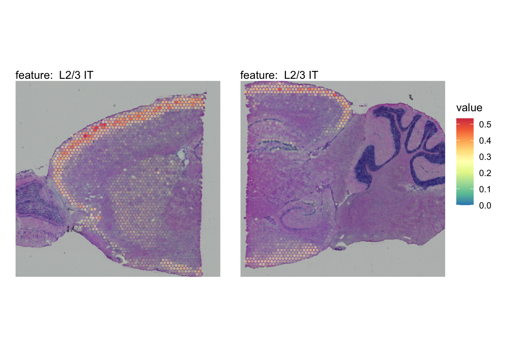
L4
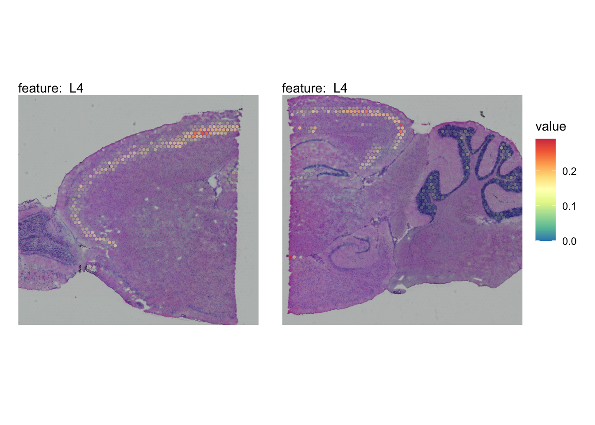
L5 IT

L5 PT

L6 CT
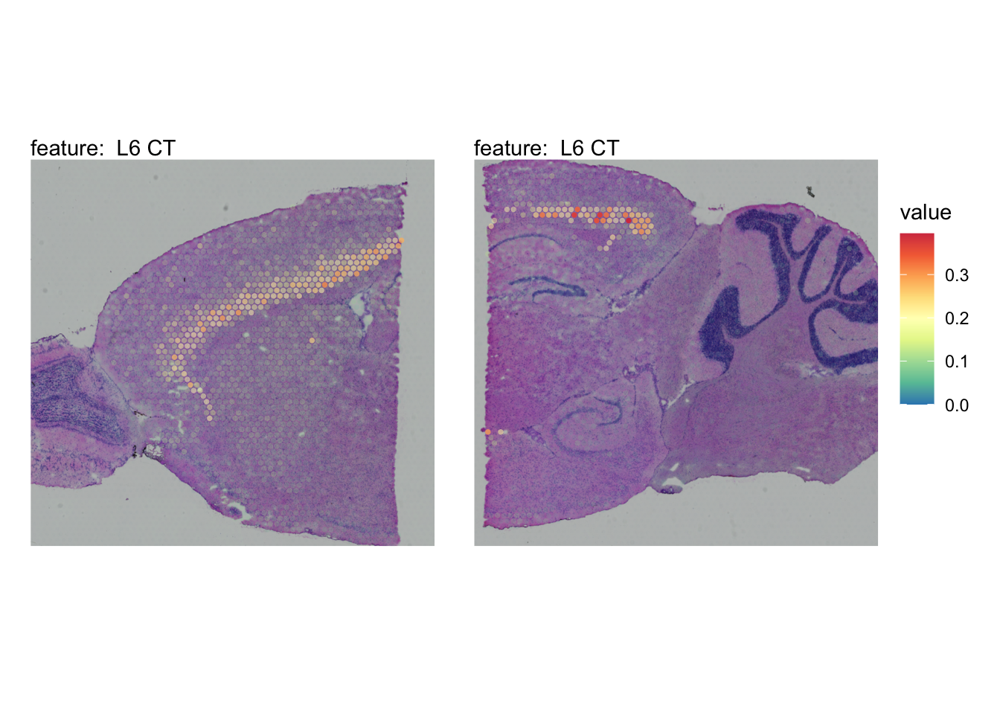
L6 IT

L6b
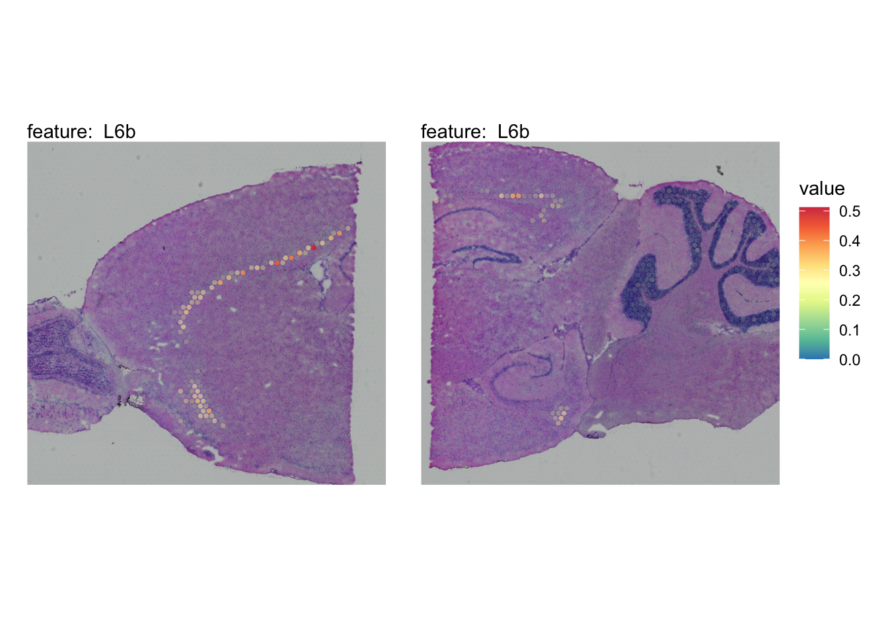
Oligo
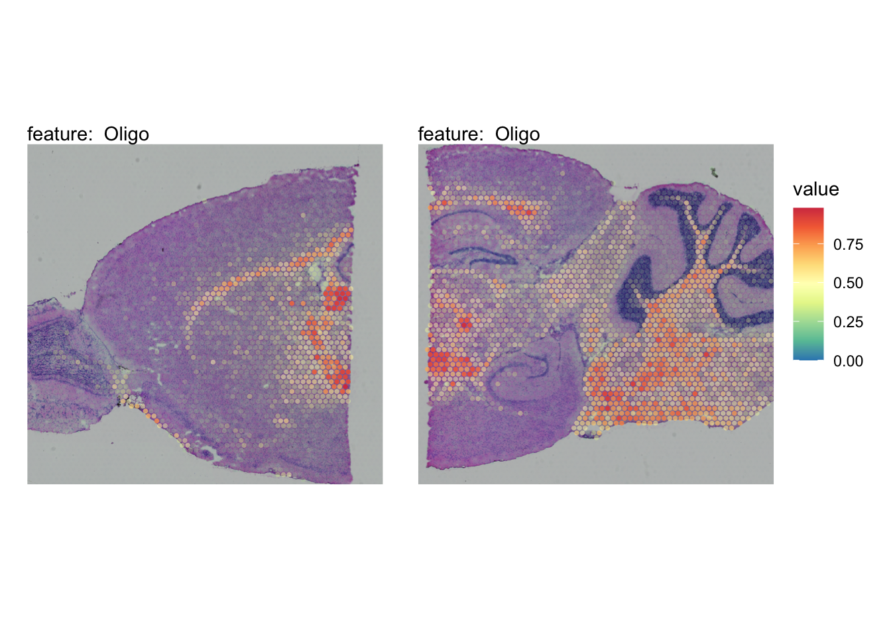
Pvalb

Meis2
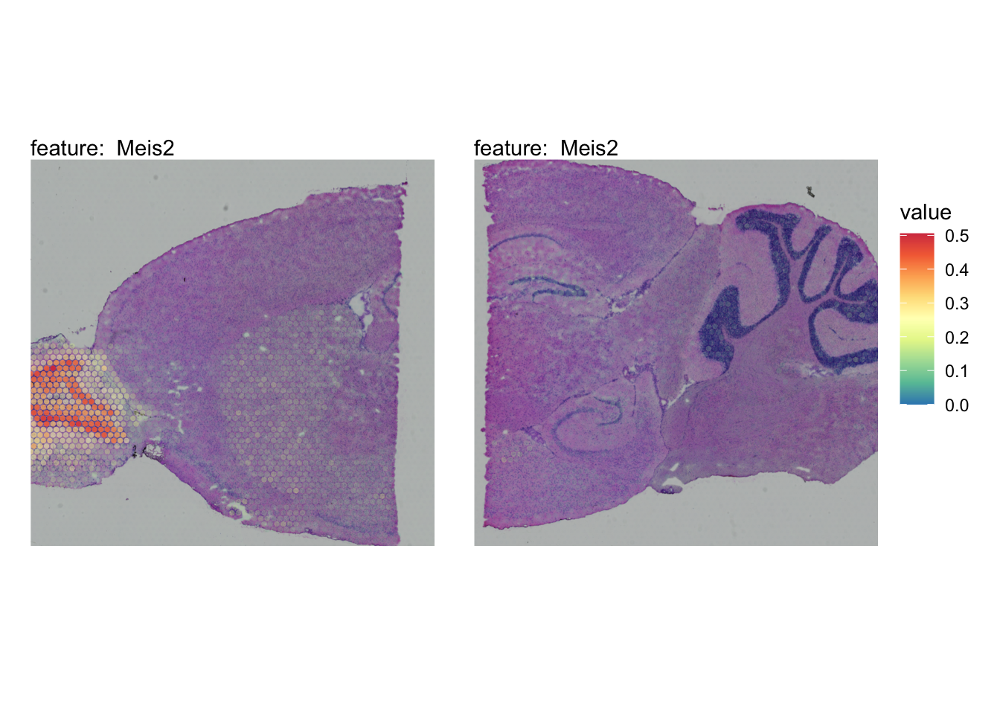
Astro

VLMC
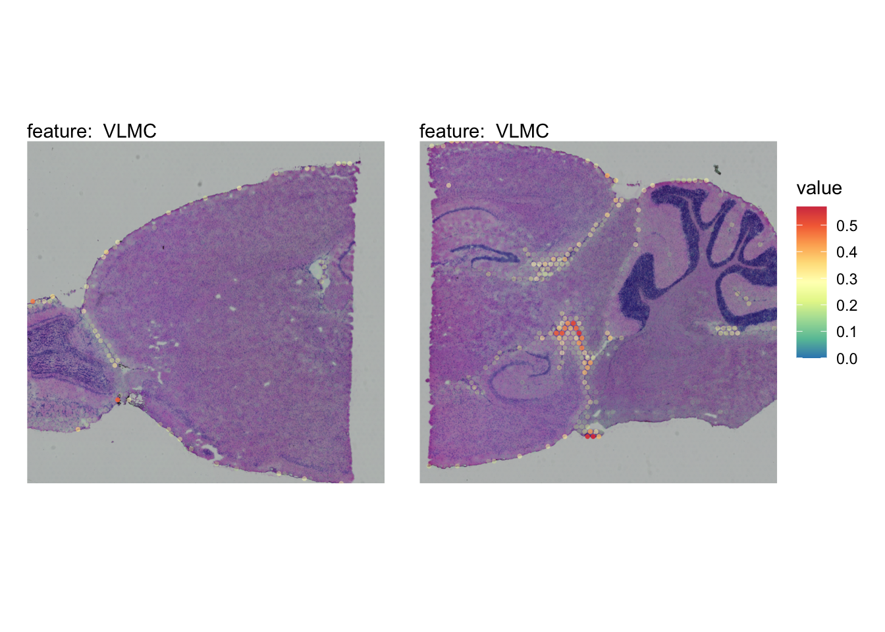
SMC
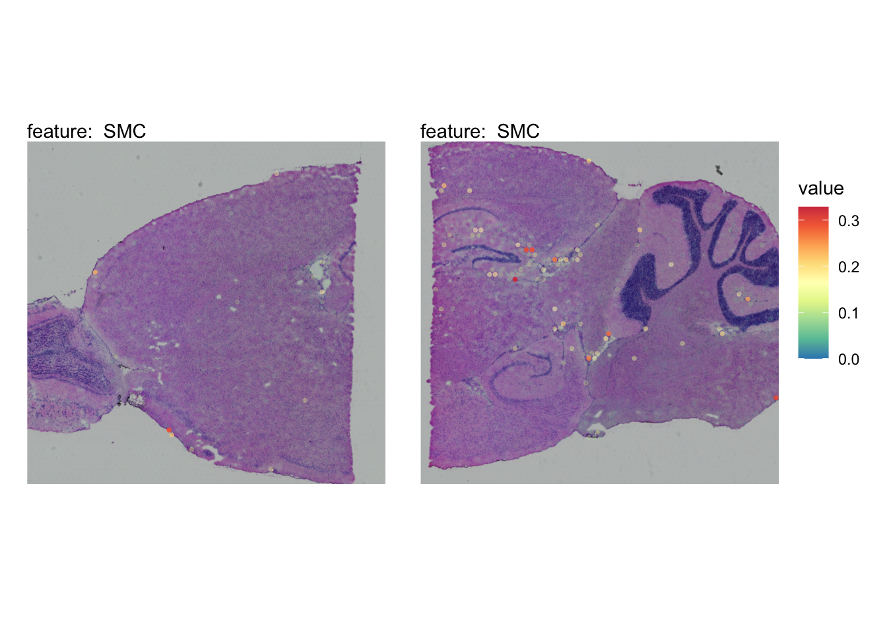
Visualize multiple cell types
We can also visualize some of these cell types in one single plot with MapMultipleFeatures().
# Load H&E images
se_brain_spatial <- se_brain_spatial |>
LoadImages()
# Plot multiple features
MapMultipleFeatures(se_brain_spatial,
image_use = "raw",
pt_size = 2, max_cutoff = 0.99,
override_plot_dims = TRUE,
colors = c("#332288", "#88CCEE", "#44AA99", "#117733", "#DDCC77", "#CC6677","#AA4499"),
features = selected_celltypes[1:7]) +
plot_layout(guides = "collect")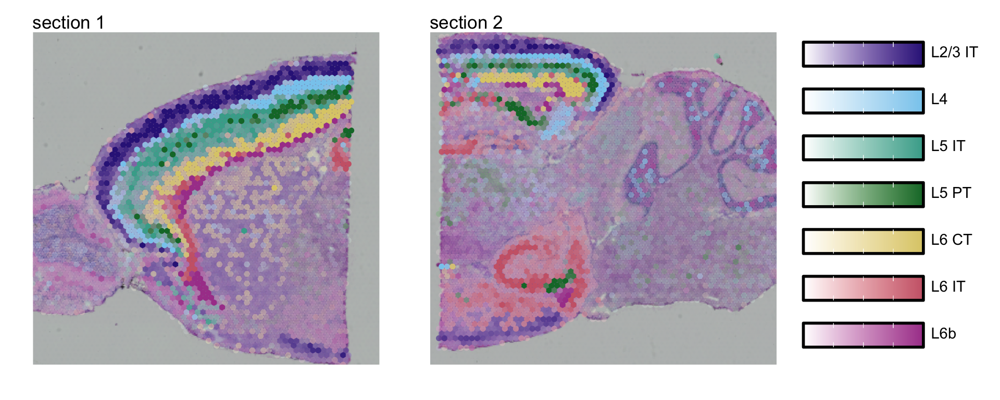
Cell type co-localization
By computing the pair-wise correlation between cell types across spots, we can get an idea of which cell types often appear together in the same spots.
cor_matrix <- FetchData(se_brain_spatial, selected_celltypes) |>
mutate_all(~ if_else(.x<0.1, 0, .x)) |> # Filter lowest values (-> set as 0)
cor()
diag(cor_matrix) <- NA
max_val <- max(cor_matrix, na.rm = T)
cols <- RColorBrewer::brewer.pal(7, "RdYlBu") |> rev(); cols[4] <- "white"
pheatmap::pheatmap(cor_matrix,
breaks = seq(-max_val, max_val, length.out = 100),
color=colorRampPalette(cols)(100),
cellwidth = 14, cellheight = 14,
treeheight_col = 10, treeheight_row = 10,
main = "Cell type correlation\nwithin spots")
We can also use the predicted cell type proportions to compute factors using NMF, and thereby summarizing the cell types presence within the same location into a set of predefined factors. Each factor can be viewed as a niche of a certain cell type composition.
nmf_data <- FetchData(se_brain_spatial, selected_celltypes) |>
RcppML::nmf(k = 10, verbose = F)
nmf_data_h <- nmf_data$h |> as.data.frame()
rownames(nmf_data_h) <- paste0("Factor_", 1:10)
colnames(nmf_data_h) <- selected_celltypes
nmf_data_h <- nmf_data_h |>
mutate_at(colnames(nmf_data_h),
~(scale(., center = FALSE, scale = max(., na.rm = TRUE)/1)))
nmf_data_h$Factor <- rownames(nmf_data_h) |>
factor(levels = paste0("Factor_", 1:10))
nmf_data_h_df <- nmf_data_h |>
tidyr::pivot_longer(cols = all_of(selected_celltypes),
names_to = "Cell",
values_to = "Weight")
ggplot(nmf_data_h_df, aes(x=Factor, y=Cell, size=Weight, color=Weight)) +
geom_point() +
labs(title="Cell type contribution", x="Factor", y = "Cell type",
color = "", size = "Scaled weight") +
scale_color_viridis_c(direction = -1, option = "magma") +
theme_bw() +
theme(axis.text.x = element_text(angle=45, hjust=1),
panel.grid = element_blank())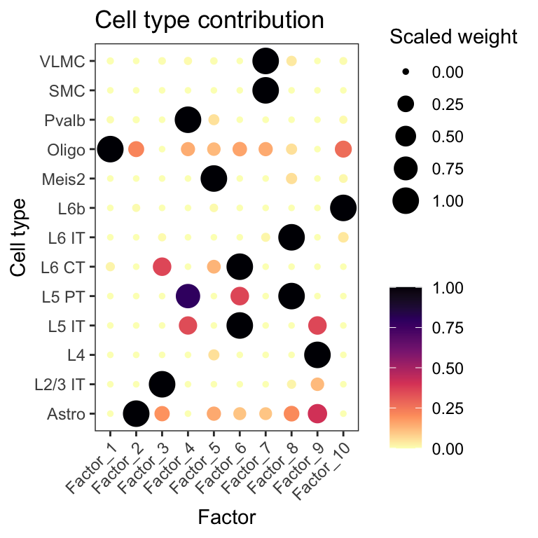
Mouse kidney
In the second example, we’ll look at data from mouse kidney. We can obtain the single-cell data with the TabulaMurisSenisData R package from bioconductor. Let’s load the data and create a Seurat object from it.
Code
sce <- TabulaMurisSenisDroplet(tissues = "Kidney")$Kidney
umis <- as(counts(sce), "dgCMatrix")
se_kidney_singlecell <- CreateSeuratObject(counts = umis, meta.data = colData(sce) |> as.data.frame())The 10x Visium mouse kidney data can be downloaded from the 10x genomics website.
Code
dir.create(paste0(tmpdir, "/kidney"))
targetdir <- paste0(tmpdir, "/kidney")
dir.create(paste0(targetdir, "/visium"))
# Download section 1
download.file(url = "https://cf.10xgenomics.com/samples/spatial-exp/1.1.0/V1_Mouse_Kidney/V1_Mouse_Kidney_filtered_feature_bc_matrix.h5",
destfile = paste0(targetdir, "/visium/filtered_feature_bc_matrix.h5"))
download.file(url = "https://cf.10xgenomics.com/samples/spatial-exp/1.1.0/V1_Mouse_Kidney/V1_Mouse_Kidney_spatial.tar.gz",
destfile = paste0(targetdir, "/visium/spatial.tar.gz"))
untar(tarfile = paste0(targetdir, "/visium/spatial.tar.gz"),
exdir = paste0(targetdir, "/visium/"))
file.remove(paste0(targetdir, "/visium/spatial.tar.gz"))
samples <- "./kidney/visium/filtered_feature_bc_matrix.h5"
imgs <- "./kidney/visium/spatial/tissue_hires_image.png"
spotfiles <- "./kidney/visium/spatial/tissue_positions_list.csv"
json <- "./kidney/visium/spatial/scalefactors_json.json"
infoTable <- tibble::tibble(samples, imgs, spotfiles, json)
se_kidney_spatial <- ReadVisiumData(infoTable)Normalize data
We apply the same normalization procedure to se_kidney_spatial and se_kidney_singlecell and run FindVariableFeatures() to detect the top most variable genes.
se_kidney_spatial <- se_kidney_spatial |>
NormalizeData() |>
FindVariableFeatures(nfeatures = 10000)For the single-cell kidney data, we’ll also filter the data prior to normalization to include cells collected at age 18m and remove cells with labels “nan” and “CD45”. This leaves us with 17 cell types.
keep_cells <- colnames(se_kidney_singlecell)[se_kidney_singlecell$age == "18m" & (!se_kidney_singlecell$free_annotation %in% c("nan", "CD45"))]
se_kidney_singlecell <- subset(se_kidney_singlecell, cells = keep_cells)se_kidney_singlecell <- se_kidney_singlecell |>
NormalizeData() |>
FindVariableFeatures() |>
ScaleData() |>
RunPCA() |>
RunUMAP(reduction = "pca", dims = 1:30)
se_kidney_singlecell <- se_kidney_singlecell |>
FindVariableFeatures(nfeatures = 10000)Run NNLS
Again, the RunNNLS() method requires a single-cell Seurat object and a 10x Visium Seurat object. The cell type annotations are stored in the “free_annotation” column.
ti <- Sys.time()
DefaultAssay(se_kidney_spatial) <- "Spatial"
se_kidney_spatial <- RunNNLS(object = se_kidney_spatial,
singlecell_object = se_kidney_singlecell,
groups = "free_annotation")── Predicting cell type proportions ──ℹ Fetching data from Seurat objects→ Filtering out features that are only present in one data set→ Kept 4993 features for deconvolutionℹ Preparing data for NNLS→ Downsampling scRNA-seq data to include a maximum of 50 cells per cell type→ Cell type(s) CD45 NK cell,CD45 plasma cell have too few cells (<10) and will be excluded→ Kept 15 cell types after filtering→ Calculating cell type expression profilesℹ Predicting cell type proportions with NNLS for 15 cell typesℹ Returning results in a new 'Assay' named 'celltypeprops'ℹ Setting default assay to 'celltypeprops'✔ Finishedsprintf("RunNNLS finished in %s seconds", round(Sys.time() - ti, digits = 2))[1] "RunNNLS finished in 0.39 seconds"# Check available cell types
rownames(se_kidney_spatial) [1] "CD45 B cell"
[2] "CD45 T cell"
[3] "CD45 macrophage"
[4] "Epcam kidney distal convoluted tubule epithelial cell"
[5] "Epcam brush cell"
[6] "Epcam kidney collecting duct principal cell"
[7] "Epcam kidney proximal convoluted tubule epithelial cell"
[8] "Epcam podocyte"
[9] "Epcam proximal tube epithelial cell"
[10] "Epcam thick ascending tube S epithelial cell"
[11] "Pecam Kidney cortex artery cell"
[12] "Pecam fenestrated capillary endothelial"
[13] "Pecam kidney capillary endothelial cell"
[14] "Stroma fibroblast"
[15] "Stroma kidney mesangial cell" NB: two cell types were discarded as they didn’t pass the minimum allowed cells per cell type threshold. The cell types discarded were NK cells and plasma cells.
# Plot selected cell types
DefaultAssay(se_kidney_spatial) <- "celltypeprops"
selected_celltypes <- c("Epcam kidney distal convoluted tubule epithelial cell",
"Epcam brush cell",
"Epcam kidney collecting duct principal cell",
"Epcam kidney proximal convoluted tubule epithelial cell",
"Epcam podocyte",
"Epcam proximal tube epithelial cell",
"Epcam thick ascending tube S epithelial cell",
"Pecam fenestrated capillary endothelial",
"Pecam kidney capillary endothelial cell",
"Stroma kidney mesangial cell")
plots <- lapply(seq_along(selected_celltypes), function(i) {
MapFeatures(se_kidney_spatial, pt_size = 1.3,
features = selected_celltypes[i],
override_plot_dims = TRUE) &
theme(plot.title = element_blank())
}) |> setNames(nm = selected_celltypes)Mapped kidney cell types
Epcam kidney distal convoluted tubule epithelial cell

Epcam brush cell

Epcam kidney collecting duct principal cell

Epcam kidney proximal convoluted tubule epithelial cell

Epcam podocyte
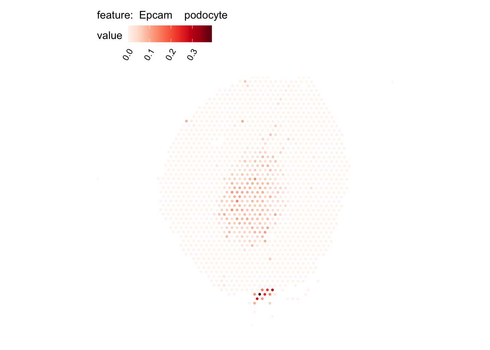
Epcam proximal tube epithelial cell

Epcam thick ascending tube S epithelial cell

Pecam fenestrated capillary endothelial

Pecam kidney capillary endothelial cell

Stroma kidney mesangial cell

Visualize multiple cell types
We can select some of these cell types and visualize them in one plot
# Load H&E images
se_kidney_spatial <- se_kidney_spatial |>
LoadImages()
# Plot multiple features
MapMultipleFeatures(se_kidney_spatial,
image_use = "raw",
pt_size = 2, max_cutoff = 0.95,
override_plot_dims = TRUE,
colors = c("#332288", "#88CCEE", "#117733", "#DDCC77", "#CC6677","#AA4499"),
features = selected_celltypes[c(1, 2, 3, 4, 6, 7)]) +
plot_layout(guides = "collect")
Or zoom in on a region of interest
# Reload H&E image in higher resolution
se_kidney_spatial <- LoadImages(se_kidney_spatial, image_height = 1500)
# Plot H&E image
rst <- GetImages(se_kidney_spatial)[[1]]
p1 <- ggplot() +
ggtitle("H&E image of zoomed in area") +
theme(plot.title = element_text(hjust = 0.2)) +
inset_element(p = rst[(0.5*nrow(rst)):(0.7*nrow(rst)), (0.5*ncol(rst)):(0.7*ncol(rst))],
left = 0, bottom = 0, right = 1, top = 1)
# Plot multiple features with zoom
p2 <- MapMultipleFeatures(se_kidney_spatial,
image_use = "raw",
pt_size = 4.5, max_cutoff = 0.95,
crop_area = c(0.5, 0.5, 0.7, 0.7),
colors = c("#332288", "#88CCEE", "#117733", "#DDCC77", "#CC6677","#AA4499"),
features = selected_celltypes[c(1, 2, 3, 4, 6, 7)]) +
plot_layout(guides = "collect") &
theme(plot.title = element_blank())
p1 / p2
Package versions
semla: 1.1.4RcppML: 0.3.7
Session info
sessionInfo()R version 4.2.3 (2023-03-15)
Platform: x86_64-apple-darwin13.4.0 (64-bit)
Running under: macOS Big Sur ... 10.16
Matrix products: default
BLAS/LAPACK: /Users/ludviglarsson/miniconda3/envs/R4.2/lib/libopenblasp-r0.3.21.dylib
locale:
[1] en_US.UTF-8/en_US.UTF-8/en_US.UTF-8/C/en_US.UTF-8/en_US.UTF-8
attached base packages:
[1] stats4 stats graphics grDevices utils datasets methods
[8] base
other attached packages:
[1] patchwork_1.1.3 purrr_1.0.2
[3] SingleCellExperiment_1.18.1 SummarizedExperiment_1.26.1
[5] Biobase_2.56.0 GenomicRanges_1.48.0
[7] GenomeInfoDb_1.32.4 IRanges_2.30.1
[9] S4Vectors_0.34.0 BiocGenerics_0.42.0
[11] MatrixGenerics_1.8.1 matrixStats_1.0.0
[13] TabulaMurisSenisData_1.2.0 tibble_3.2.1
[15] semla_1.1.4 ggplot2_3.4.3
[17] dplyr_1.1.2 SeuratObject_4.1.3
[19] Seurat_4.3.0.1
loaded via a namespace (and not attached):
[1] utf8_1.2.3 spatstat.explore_3.2-1
[3] reticulate_1.31 tidyselect_1.2.0
[5] RSQLite_2.3.1 AnnotationDbi_1.58.0
[7] htmlwidgets_1.6.2 grid_4.2.3
[9] Rtsne_0.16 munsell_0.5.0
[11] codetools_0.2-19 ica_1.0-3
[13] future_1.33.0 miniUI_0.1.1.1
[15] withr_2.5.0 spatstat.random_3.1-5
[17] colorspace_2.1-0 progressr_0.14.0
[19] filelock_1.0.2 knitr_1.43
[21] rstudioapi_0.15.0 ROCR_1.0-11
[23] tensor_1.5 listenv_0.9.0
[25] labeling_0.4.3 GenomeInfoDbData_1.2.8
[27] polyclip_1.10-4 RcppML_0.3.7
[29] bit64_4.0.5 farver_2.1.1
[31] pheatmap_1.0.12 rhdf5_2.40.0
[33] parallelly_1.36.0 vctrs_0.6.3
[35] generics_0.1.3 xfun_0.40
[37] BiocFileCache_2.4.0 R6_2.5.1
[39] bitops_1.0-7 rhdf5filters_1.8.0
[41] spatstat.utils_3.0-3 cachem_1.0.8
[43] DelayedArray_0.22.0 promises_1.2.1
[45] scales_1.2.1 gtable_0.3.4
[47] globals_0.16.2 goftest_1.2-3
[49] rlang_1.1.1 zeallot_0.1.0
[51] splines_4.2.3 lazyeval_0.2.2
[53] spatstat.geom_3.2-4 BiocManager_1.30.22
[55] yaml_2.3.7 reshape2_1.4.4
[57] abind_1.4-5 httpuv_1.6.11
[59] tools_4.2.3 ellipsis_0.3.2
[61] RColorBrewer_1.1-3 ggridges_0.5.4
[63] Rcpp_1.0.11 plyr_1.8.8
[65] zlibbioc_1.42.0 RCurl_1.98-1.12
[67] dbscan_1.1-11 deldir_1.0-9
[69] pbapply_1.7-2 cowplot_1.1.1
[71] zoo_1.8-12 ggrepel_0.9.3
[73] cluster_2.1.4 magrittr_2.0.3
[75] data.table_1.14.8 magick_2.7.5
[77] scattermore_1.2 lmtest_0.9-40
[79] RANN_2.6.1 ggnewscale_0.4.9
[81] fitdistrplus_1.1-11 shinyjs_2.1.0
[83] mime_0.12 evaluate_0.21
[85] xtable_1.8-4 gridExtra_2.3
[87] compiler_4.2.3 KernSmooth_2.23-22
[89] crayon_1.5.2 htmltools_0.5.6
[91] later_1.3.1 tidyr_1.3.0
[93] DBI_1.1.3 ExperimentHub_2.4.0
[95] dbplyr_2.3.3 MASS_7.3-60
[97] rappdirs_0.3.3 Matrix_1.6-1
[99] cli_3.6.1 gdata_2.19.0
[101] parallel_4.2.3 igraph_1.5.1
[103] forcats_1.0.0 pkgconfig_2.0.3
[105] sp_2.0-0 plotly_4.10.2
[107] spatstat.sparse_3.0-2 XVector_0.36.0
[109] stringr_1.5.0 digest_0.6.33
[111] sctransform_0.3.5 RcppAnnoy_0.0.21
[113] spatstat.data_3.0-1 Biostrings_2.64.1
[115] rmarkdown_2.24 leiden_0.4.3
[117] uwot_0.1.16 curl_5.0.2
[119] shiny_1.7.5 gtools_3.9.4
[121] lifecycle_1.0.3 nlme_3.1-163
[123] jsonlite_1.8.7 Rhdf5lib_1.18.2
[125] viridisLite_0.4.2 fansi_1.0.4
[127] pillar_1.9.0 lattice_0.21-8
[129] KEGGREST_1.36.3 fastmap_1.1.1
[131] httr_1.4.7 survival_3.5-7
[133] interactiveDisplayBase_1.34.0 glue_1.6.2
[135] png_0.1-8 BiocVersion_3.15.2
[137] bit_4.0.5 stringi_1.7.12
[139] HDF5Array_1.24.2 blob_1.2.4
[141] AnnotationHub_3.4.0 memoise_2.0.1
[143] irlba_2.3.5.1 future.apply_1.11.0